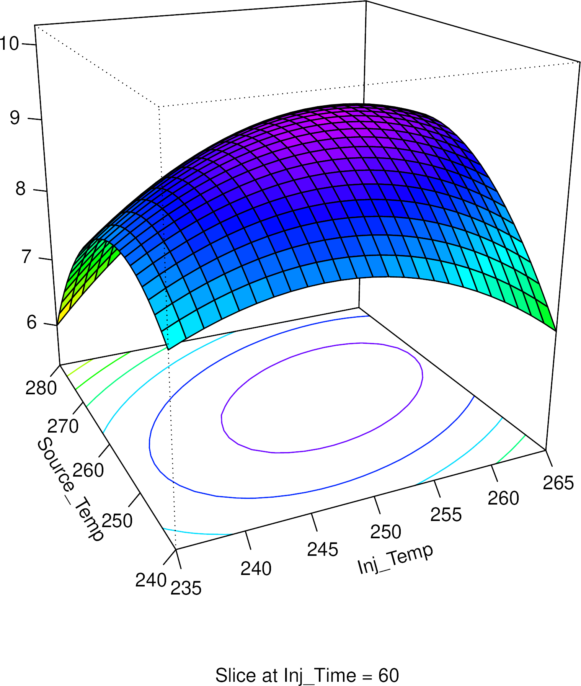

Python Scripts for Chromatographic Data Processing
Thank you for your interest. This package can help you in the treatment of chromatographic data and the like. It does NOT read or manipulate chromatograms directly (the program that came with your instrument can do it better anyways, and there is always OpenChrom). You must integrate your chromatograms, and add that data (in the form of .csv or .xlsx) to this program.
At heart, this is simply an attempt to make a free software package for chromatography calculations. The whole thing is just an easier way to interact with already written libraries, so that you can seamlesly input your data and get a chewed-out result. However, it is obviously your responsibility to know what you are getting and how to interpret it (I mostly don’t, but you can do better than me).
If you are familiar with the Python programming language, the module will be very easy to use, and you can change it to your liking, just as long as you abide by the GNU General Public License v3. If you are just using the software, then you can do whatever you want (really) so long as you clearly mention you used it in your publications (this is more for the sake of replicability than my own ego, I promise…). However, if you are changing the software or oherwise publishing it, you must abide by the license, whose most important feature is that it requires all derivatives to release the source code.
If you are not familiar with any of this, and are wondering what the heck is this website GitHub and why do I care, then you can also benefit from this package. There are several scripts that can help you (for the command line).
All the documentation is in this page. Specific tinkering will require you to look into the code… and change it! It’s not a bomb, you know? Worst that can happen is it stops working, and if that causes you to get up from the computer and go look at some trees, fine by me!
In section Overview of Functionality you can find a simple description of the things this software can do. Package Structure describes, well, the package structure, i. e. in what files and directories is what. The remaining sections descibe each sub-module in greater detail.
A Disclamer: This is a very small project written by an amateur who doesn’t even like computers that much. I’ve tried my best to make sure that when the software does work, it will give you correct results. However, if something does not work, you can just look into the code. It really is relatively simple.
This section presents a simple description of Chromapy: its structure and functionality. The program is divided into four submodules: - Multivariate Analysis - Design of Experiments - Quantification Assistant - Chromatography Calculators

This submodule can apply some types of multivariate analysis methods mostly for dimensionality reduction. At the moment it does principal component analysis (PCA) and partial least squares (PLS). It can: - Normalize data according to several different algorithms; - Calculate principal components for PCA and PLS; - Plot the results in several different ways (loadings, samples, biplot…)

This submodule will assist in the use of experimental designs from beginning to end. It can: - Generate several experimental design matrixes: full factorial, Plackett-Burman and Box-Behnken (used for response surface modelling); - Calculate main effect for the screening designs (two level full factorial and Plackett-Burman); - Perform response surface moddeling for a Box-Behnken design;
This is by far the most complex submodule, but using it is easy enough. However, one must know the basic theory of experimental design in order to avoid mistakes (something I’m very prone to). In the future I might implement the calculation of statistical significance for main effects in screening designs.

Automatic quantification from signal values (does not perform integration). Provides also Recovery calculation and some method performance parameters such as detection limits (calculated from the calibration curve, which might not be the ideal method. See below).
This is a tiny tiny piece of code. It can calculate the volume of solvent used by an HPLC based on the eluent program, which may be useful, for example in order to calculate green analytical chemistry metrics for several methods. It can also transform GC mobile phase linear velocity into flow and vice versa for open tubular columns. This is very basic stuff, but someone might find it useful.
The module is useful for those familiar with the python programming
language, as it can be used in the creation of custom scripts and
routines. The code can be found in the folder chromapy.
The Scripts are intended for easy command line use, without requiring
any specialized computer knowledge. I’ve put then in the parent folder
so that people can just download the whole repository and run them
without difficulty. Currently there are these scripts:
chromacalc.py DOE.py PCA.py
PLS.py and Quantification.py. The
.py means these are python source code files, which your
python interperter can read.
The scripts are actually just a way to interface with the module (in
the chromapy folder) through the command line.
There is also an Examples_Templates folder which has
example input and output files for every function the software performs.
Please look into these carefully, because the program requires very
specific inputs to work prperly. This is explained in the detailed
sections for each submodule.
The file called Calls_functioning has several examples
of command line calls which will give you a result. Use them as examples
to find out how the program works.
There is also a Windows folder with two files, which
will help you open an anaconda instance in Microsoft Windows.
Each submodule is treated separately, and functions (mostly)
independently. For fine-grained control or more comments/instructions
check the source code. Also, the examples and templates are your
friends, use them. The first subsection deals with using the scripts,
which will be most convenient for users not familiar with python. The
following explanations for each submodule deal mostly with interacting
directly with python. The module has several dependencies, which you
have to figure out how to install (just google it). These are:
numpy, seaborn, scikit-learn and
rpy2.
If you want to use the scripts, you can pass the option -h to get help and guidance. For example, if you want to use the experimental design module, just open a terminal window in the same folder as the scripts and write:
python DOE.py -hIt should return a small “manual” for that script (not for the module
itself!). Equally, you can do python PCA.py -h,
python PLS.py -h, python chromacalc.py -h or
python quantification.py -h. The easiest way to use the
scripts is to download this whole repository and then add your datafiles
to the parent directory (the one called Chromapy-master), that way you
can just call them easily, as in:
python DOE.py -b BBD_Input.csvWhere BBD_Input.csv is your input file with the varaible
names and values (check the sample file at
Examples_Templates/DOE). By default, it will return a file
called Box-Behnken_Design.csv. The DOE.py script uses
different options to select what you want. -p
-f and -b are for generating Plackett-Burman,
Full-factorial and Box-Behnken designs, respectively. -m is
for calculating the main effect of Plackett-Burman or two-level
Full-factorial designs, and -r does response-surface
modelling for Box-Behnken designs.
You can simply run each line of code from
Calls_functioning and it should work. For example:
python PLS.py "Examples_Templates/Multivariate/wine_data_PLS.csv" -r 3 -s 10 -o "TEST"Will give you a partial least squares biplot for 3 response
variables, with the loadings scaled to 10x (to fit the biplot) and an
output file called TEST.png.
Options and explanations are given within each function in the source code. This is a quick exposition of the functionality. You can use the pre-made script for an easier time, especially if you don’t understand python (see above).
First, the file should be imported:
import chromapy
df = chromapy.pca_import("Examples_Templates/Multivariate/wine_data.csv")You do NOT need to use .csv files for most functions, but it is advised. Aso supported are: .xls, .xlsx, .xlsm, .xlsb, .odf, .ods, .odt
The input file should have:
| Sample | Type | Var1 | Var2 | Var3 | … |
|---|---|---|---|---|---|
| water1 | S | 12.5 | 22.1 | 0.01 | … |
| water2 | G | 11.7 | 35.2 | 0.03 | … |
Var1, Var2, etc. take any name or number
you want, and this will be the name given to the loadings in the biplot.
The Type is optional, and will separate the samples by
color and shape, as well as print a label.
For PLS, you should add the response columns as
Response1, etc. So for two response variables, do:
| Sample | Type | Response1 | Response2 | Var1 | Var2 | Var3 | … |
|---|---|---|---|---|---|---|---|
| water1 | S | 122.5 | 0.002 | 12.5 | 22.1 | 0.01 | |
| water2 | G | 101.7 | 0.085 | 11.7 | 35.2 | 0.03 | |
| … |
For ease of use and avoidance of errors, please use the sample.csv file provided! You can save it as .xlsx if you wish.
Then, we can normalize if we want:
df_normalized = chromapy.normalize(df, normalization='area')
print(df_normalized)The normalization option can be set to: - “normalize” -
Applies the normalize function from scikitlearn, documentation here
- “standard” - This is the default, if no option is given. Documentation
here
- “minmax” - Applies the MinMaxScaler. Documentation here
- “area” - Will make the sum of all values in a sample equal to 100.
Equivalent to using relative percentages of a chromatogram, ie.
assuming the total area is 100%, and the area of each peak is a certain
percentage of that.
Normalizations occur on a sample by sample basis, naturally (not variable by variable). Be aware that if you have response variables (for PLS) these will also be normalized, since the normalization function does not distinguish them.
After normalization, you can calculate the principal components. This
function will return 3 objects: pca_result OR
pls_result has the values for each sample witin the
principal component space. loadings_df is a nicely
formatted dataframe with each loading (variable) and its respective
contribution to each principal component, and loadings is
the actual object created by scikit-learn’s computations, which is used
internally when graphing for PCA.
pca_result, loadings_df, loadings = chromapy.pca(df_normalized)The only difference for PLS is that it requires a
responses list, where the names of each response variable
are. Also, it returns a response_df rather than the
scikit-lean object. For 4 response variables:
responses = ["Response1", "Response2", "Response3", "Response4"]
pls_result, loadings_df, response_df = chromapy.pls(df_normalized, responses)Finally we can graph the plot. There is one function for PCA and another for PLS, and they both have many options (check the source code), but this is an easy usage case:
plot = chromapy.pca_plot(pca_result, loadings_df, loadings, output="sample_pca_output.svg", loadings_scale=10)And for PLS:
plot = chromapy.pls_plot(pls_result, loadings_df, response_df, labels=True, loadings_scale=34, write_loadings = True, output="Sample_PLS_outut.svg")Only the three first arguments are mandatory, all else will default
if you don’t pass anything. On Biplots (both samples and loadings) you
will have to scale up or down the loadings to correctly fit the plot
axis. This is done with the loadings_scale option, as
shown. When the graph is shown on screen, you can save directly, so the
output option is actually unnecessary.
You can (and should) save the graphs as .svg files, which you can then open in inkscape and edit to your heart’s content! Or if you use LaTeX, which does not support .svg directly, you can convert them to .pdf in inkscape.
Built on top of other DOE packages, provides both matrix design as well as data analysis and response surfaces. Supports Placket-Burman and two-level full factorial designs for screening. Also provides Box-Behnken designs for fitting a response surface.
Most of the code to generate the experimental design matrixes was forked from here. The response surface fitting is written in the R language and called directly from python using the rpy2 library. The reason is because the calculations use the excelent R library called rsm, and there is no comparable library for python. The first time you run the code, it should install the required R dependencies.
The input is very simple. For two level designs (Plackett-burman and full factorial), simply do:
| Variable1 | Variable2 | Variable3 | Variable4 | … |
|---|---|---|---|---|
| Var1 low value | Var2 low value | Var3 low value | Var4 low value | … |
| Var1 high value | Var2 high value | Var3 high value | Var4 high value | … |
You can name the variables whatever you want (try avoiding special symbols, like $#|, etc. The values need not be numbers, they can be for example: Yes/No, Glass/Plastic, MgSO4/Na2SO4 or something like that. You also don’t need to put the low value on top and the high value on the bottom. Check the sample file to get an idea.
To generate a design is simple. Both the Plackett-Burman and 2-level full factorial functions will return a design dataframe with the experiments to be performed and their variable values, as well as the matrix of -1 and 1 which was used to produce it. The matrix is required for further calculations, such as main effect. Plackett-Burman requires a second input, which will be an integer of how many experiments you want to perform. This value should be a multiple of four, but the program will round up if needed. It should also be larger than the number of variables, and will not work otherwise.
import chromapy
design, matrix = chromapy.plackett_burman("Examples_Templates/DOE/DOE_Input.csv", 12)
print(design)For Box-Behnken designs, the input file changes slightly:
| Variable1 | Variable2 | Variable3 | Variable4 | … |
|---|---|---|---|---|
| Var1 center value | Var2 center value | Var3 center value | Var4 center value | … |
| Var1 deviation value | Var2 deviation value | Var3 deviation value | Var4 deviation value | … |
So if you put:
| Temperature |
|---|
| 250 |
| 50 |
The values for temperature will be 200, 250 and 300.
To generate the experiment matrix:
import chromapy
BBDesign = chromapy.box_behnken("Examples_Templates/DOE/BBD_Input.csv", randomize = False, output = "Whatever_file_name_suits_you.csv")
print(BBDesign)BBDesign is an R object created by the rsm
package, but you can print it just the same. The function will generate
a .csv output by default, but you can change the name. It will also
randomize the experiment order by default, but you can set the randomize
variable to False and then randomize it yourself (which you definitely
should do).
For calculating the main effect you have to input the Matrix (-1 and 1, NOT the design) which you got when you generated the design, and another file or dataframe with a single column whose first entry is “Results” (capital R):
| Results |
|---|
| 3583.3 |
| 3945.1 |
| 2010.4 |
| 9231.8 |
| … |
These results must be in the same order as the experiments in the
matrix. You can input these either by .csv (default) or correctly
formatted dataframes. If you want to use the .csv, you have to generate
it with
matrix.to_csv('Plackett_Burman_matrix.csv', index = False).
Using .csv:
import chromapy
design, matrix = chromapy.plackett_burman("Examples_Templates/DOE/DOE_Input.csv", 12) #Generate design
matrix.to_csv('Plackett_Burman_matrix.csv', index = False) #Convert matrix to .csv
main_effect = chromapy.main_effect("Examples_Templates/DOE/DOE_results.csv", "Plackett_Burman_matrix.csv") #Calculate main effectUsing pandas dataframes:
import chromapy
import pandas as pd
design, matrix = chromapy.plackett_burman("Examples_Templates/DOE/DOE_Input.csv", 12)
results = pd.read_csv("Examples_Templates/DOE/DOE_results.csv")
main_effect = chromapy.main_effect(results, matrix, dataframe = True)To generate response surfaces you can again input either .csv files,
or handle everything internally. There is a function called
chromapy.add_results which takes the R object with the
design and a list with the result values, and joins them in a propperly
formatted object to perform response-surface moddeling. But by far the
easiest way is to output the Box-Behnken design to a csv file (named
Whatever_file_name_suits_you.csv above) and then add your
results to this file by adding a column at the end entitled
Results. Check the file BBD_with_results.csv
to get an idea.
design_rsm = chromapy.rsm("Examples_Templates/DOE/BBD_with_results.csv", "Examples_Templates/DOE/BBD_Input.csv")
chromapy.rsm_plot(design_rsm, pdf = "Output_File.pdf")The functionality of this submodule is extremely simple. The major
requirement is that the input files are correctly formatted. There are
two functions: chromapy.quant_import and
chromapy.quantification.
chromapy.quant_importsimply takes .csv or spreadsheet files
and turns them into dataframes for the
chromapyquantification function.
import chromapy
calibration_df, samples_df = chromapy.quant_import("Examples_Templates/Quantification/calibration.csv", "Examples_Templates/Quantification/samples.csv")
quant_results = chromapy.quantification(calibration_df, samples_df) # quant_results contains the resultschromapy.quant_import can be bypassed, and only exists
if for some reason you want to be able to pass dataframes directly to
chromapy.quantification, without calling
chromapy.quant_import. However, if you are using
spreadsheet type files, you can simply do:
import chromapy
quant_results = chromapy.quantification("Examples_Templates/Quantification/calibration.csv", "Examples_Templates/Quantification/samples.csv", file_input = True)By default, the program assumes no internal standard, and does not write anything to an output file. You can change this. For example:
import chromapy
quant_results = chromapy.quantification("Examples_Templates/Quantification/calibration.csv", "Examples_Templates/Quantification/samples.csv", file_input = True, int_standard = True, print_results = "My_Results.txt")
quant_results.to_csv("Quantification_results.csv")If you run the sript multiple times with the same file name (in this
case My_Results.txt) it will append to that file, with a
date and time tag for each run. By default, the sript does not print the
quantification results of the samples, they will simply be in
quant_results. Here we create a file
Quantification_results.csv which has the mean and standard
deviation for each compound in each sample. My_Results.txt
(or whatever name you give it) will have the method performance
parameters for each compound calibrated).
The script requires two files. If you are inputting the dataframes
directly to chromapy.quantification, the requirements are
exactly the same. The calibration file, with the calibration data (duh)
should look like this, with internal standard:
| ConcIS | SignalIS | Conc | Compound1Name | Compound2Name | Compound3Name | … |
|---|---|---|---|---|---|---|
| 20 | 12445 | 10 | 340 | 345932 | 3432 | |
| 20 | 30592 | 20 | 985 | 894934 | 9583 | |
| 20 | 19485 | 30 | 1459 | 1313294 | 14050 | |
| … |
The columns need not be in any particular order, but the column names are important:
ConcIS The concentration of the internal standard. Only
required if int_standard = True;SignalIS The signal of the internal standard. Only
required if int_standard = True;Conc The concentration of the compoundCompoundxName The name you want to appear on the
calibration curve image and results for that compound. Can be whatever
you want.The script wil always look for the string Conc (CASE
SENSITIVE!) in the dataframe header. If you set
int_standard = True it will also look for
ConcIS and SignalIS. Otherwise, these need not
be present. Notice that to use one row for many compounds they all need
to be at the same concentration. If you have different concentrations
for different compounds just calibrate them in different runs of the
script. If you leave blank values the script will not function properly.
Also, you cannot add zeros because they will be assumed as signal
values.
The samples file is similar, and must have exactly the same comound
names as the calibration file. It can have more, or in a differen order,
but the program will look for the strings which it already “calibrated”.
So if in your calibration file you have Caffeine, then it
will look for that exact word (case sensitive!) in the samples
dataframe. The samples file requires an aditional column which should be
labeled Sample. An example with sample triplicates and no
internal standard:
| Sample | Compound1Name | Compound2Name | Compound3Name | … |
|---|---|---|---|---|
| Mekong | 34990 | 349239 | 0 | |
| Mekong | 24901 | 240320 | 0 | |
| Mekong | 50320 | 324599 | 0 | |
| Danube | 0 | 239492394 | 0 | |
| Danube | 0 | 33294923 | 0 | |
| Danube | 0 | 3240004302 | 0 | |
| Tagus | 12390 | 34009 | 450 | |
| Tagus | 3400 | 320543 | 304 | |
| Tagus | 34000 | 234000 | 100 | |
| … |
The column names:
Sample The sample name. For replicates, use the same
name and the sript will calculate the average and standard
deviation.ConcIS The concentration of the internal standard. Only
required if int_standard = True;SignalIS The signal of the internal standard. Only
required if int_standard = True;CompoundxName The name of the compound. Must be EXACTLY
the same as that of the calibration file, because the script will search
for that name.Any extra columns on the samples file (such as compounds not being calibrated in that run) will be ignored.
This is an extremely simple piece of code. Check the source for instructions or use the script.